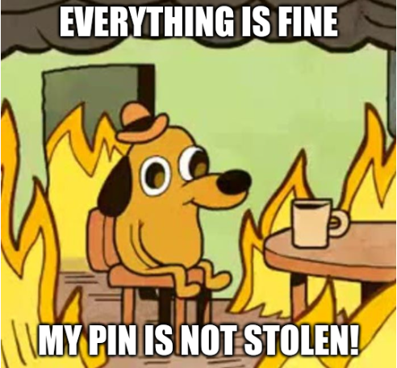

Challenge #419
Chrono Rage
Votre ami a développé un petit démon local sur son serveur qui ouvre une socket en écoute
sur localhost et effectue des actions privilégiées lorsque des clients s’y
connectent
et s’authentifient avec un PIN. Malheureusement, il s’est fait attaquer son serveur
récemment, malgré tous les efforts qu’il a mis dans la sécurisation de son démon.
Il vous fournit les sources de ce démon en Python : comme vous le verrez, pour sécuriser
l’envoi du PIN sur la socket il utilise des clés de session AES tournantes. Il vous
fournit aussi une capture pcap correspondant à l’activité suspecte d’un
client local
relevée grâce à son monitoring constant des connexions. Malheureusement, il a perdu la
clé AES utilisée au moment de cette capture et ne peut donc vous la fournir. Enfin, il a
évidemment caviardé le PIN dans les sources : vous n’avez a priori pas à connaître ce
secret sensible !
Saurez-vous l’aider en lui expliquant comment l’attaquant s’y est pris, et qu’il doit
changer de PIN et corriger son code au plus vite ?
Note : le format du flag est FCSC{PIN} où PIN
est le PIN du serveur.

Fichiers à étudier
- chrono-rage.pcap
- chrono-rage-server.py
import socket, sys, os
from passlib.hash import scrypt
from Crypto.Cipher import AES
from Crypto.Util import Counter
ref_password = "0"*4 # XXX: fake PIN, to be fixed
allowed_charset = "0123456789"
SCRYPT_ROUNDS = 14
COMM_AES_KEY = b"\x00"*16 # XXX: fake key, to be fixed
COMM_IV = 0
def check_password(pwd):
if len(ref_password) != len(pwd):
return False
for i in range(len(ref_password)):
if pwd[i] not in allowed_charset:
return False
for i in range(len(ref_password)):
a = scrypt.hash(ref_password[i].encode(), salt_size=0, rounds=SCRYPT_ROUNDS)
b = scrypt.hash(pwd[i].encode(), salt_size=0, rounds=SCRYPT_ROUNDS)
if a != b:
return False
return True
def server():
global COMM_AES_KEY
global COMM_IV
host = "localhost"
port = 5000
server_socket = socket.socket()
server_socket.setsockopt(socket.SOL_SOCKET, socket.SO_REUSEADDR, 1)
server_socket.bind((host, port))
print("[+] Server listening ...")
server_socket.listen(1)
conn, address = server_socket.accept() # accept new connection
print("[+] Connection from: " + str(address))
while True:
# Wait for the password (max 16 bytes) and decrypt it
password = conn.recv(16)
if not password:
conn.close()
sys.exit(-1)
# Decrypt and check
ctr = Counter.new(128, initial_value=COMM_IV)
aes = AES.new(COMM_AES_KEY, AES.MODE_CTR, counter=ctr)
COMM_IV += 1
password = aes.decrypt(password).decode()
if check_password(password) is True:
conn.send("OK".encode())
break
else:
conn.send("NOK".encode())
print("[+] Password OK! Goodbye ...")
conn.close()
if __name__ == '__main__':
server()